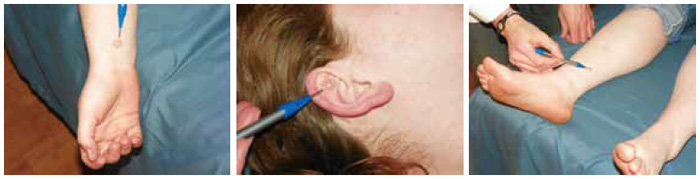

TESTIMONIAL
HOME > TESTIMONIAL > Howard, John

Howard, John
L.Ac., Dipl Ac.
Maryland Acupuncture Clinic
I would like to share with you some of my uses of the New Pyonex needles and how I incorporate them into my practice. I live and work just outside of Washington, DC, our nation’s capital. Most of my patients are so busy and work long hours that coming in more than once a week is almost impossible. My treatment results have to last a minimum of a week or more. After each treatment I will place a New Pyonex needle on the same acupuncture points I used during their treatment. I then send them home and instruct them to keep the New Pyonex needles in for one week. By doing this I achieve longer lasting results. This simple technique has had a profound effect on my patients’ health.
These needles are easy to use and cause no pain. The New Pyonex needles also have many uses. I use the New Pyonex needles not only for pain and stressrelated patients but for other conditions as well. They have opened my practice to a whole new group of patients children. They allowed me to treat children that are either too young to use regular needles on or are afraid of regular needles. I have treated children as young as few years old with New Pyonex needles and frequently achieved very good results. Over the years I have found a few clinical pearls when using the New Pyonex needles. Some have produced incredible results. I would like to share some of them with you.
- Runners Technique© - Within 20 minutes of placing the New Pyonex needles on the patient’s ears, it helps them run up to 12% faster than they ever ran
- Scalp Acupuncture - just one or two New Pyonex needles are needed to reduce pain levels dramatically for my patients. The results last quite a while and the patient compliance is very good.
- Bedwetting - Using SP6 bilaterally on kids decreases bedwetting at night
- Headaches - Placing a New Pyonex needle on Point Zero, Shenmen and Omega 2 in the ear can stop most headaches in just minutes.
- Sleep Apnea and Snoring - Using the Chong Vessel (SP4 - PC6) along with points on the ear lobe in the Nogier’s 3 Phases
- Depression and Anxiety - Using the hip point and heart point in Nogier’s Phase 3 on the ear
- Motion Sickness - Placing a New Pyonex needle in PC6 for long car rides or airplane flights.
I highly recommend using the New Pyonex needles. They can be used as a great adjunct to your treatments or as a stand-alone technique by themselves. I use them quite frequently in my practice with phenomenal results. If you are looking to extend your treatment results, or incorporate treating children into your practice, I would definitely urge you to use the New Pyonex needles.
